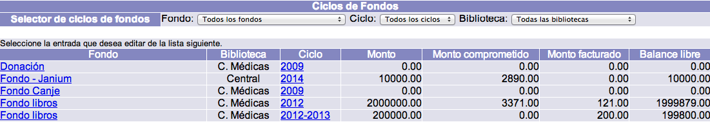
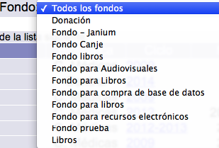
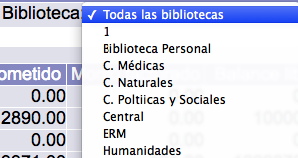
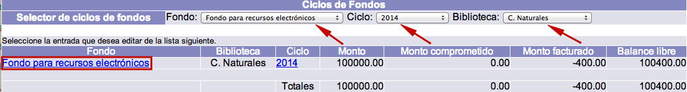
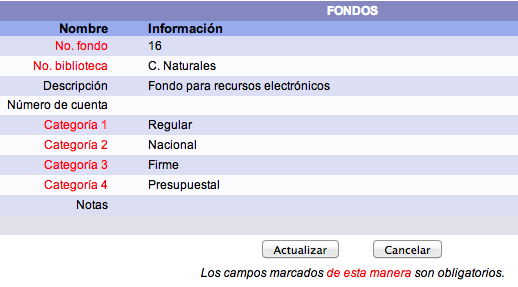
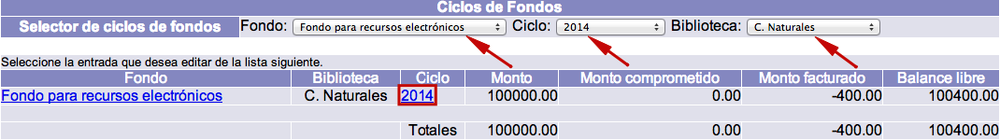

Los fondos representan los presupuestos económicos que van a ser usados por la institución para pagar a los proveedores por sus materiales facturados. Los ciclos de fondos, por su parte, son las cantidades parciales o partidas destinadas a un fondo que, generalmente, se crean para definir de cuánto dinero se dispone en un espacio de tiempo concreto, como años o semestres.
Cada fondo debe tener al menos un ciclo de fondo relacionado para poder pagar con él. De esta forma, en la configuración previa, el fondo se crea una sola vez mientras que los ciclos de fondos se crean conforme se vayan necesitando.
Poniendo un ejemplo de esto: una institución puede establecer un fondo para la adquisición de material audiovisual y un ciclo de fondo para el año 2014, de manera que, del total para la compra de estos materiales, el gasto para el período indicado va a ser de 30.000. Esta cifra se registra en el ciclo de fondo, mientras que en el fondo se define que se trata de una partida para adquirir ese tipo de material.
Consulta de fondos y ciclos de fondos
El procedimiento a seguir es el siguiente:
- Hacer clic en la opción Fondos de la barra de herramientas del módulo.

- Se despliega la lista o sumario de los fondos con los que se ha ordenado material. Es decir, es posible que no todos los fondos definidos en la configuración del sistema aparezcan en esta lista. Para verlos todos, se debe acceder al módulo de Administración.

- En el sumario pueden encontrarse los siguientes datos: el fondo, la biblioteca, el ciclo de fondo, el monto (cantidad total), el monto comprometido (cantidad ya asignada a algún pedido), el monto facturado (cantidad ya pagada) y el balance libre.

- Además, cuando hay más de un fondo, se puede utilizar la lista desplegable de fondos para mostrar sólo los resultados correspondientes a uno específico.

- Por otra parte, si hay varios ciclos y se desean consultar sólo los relacionados con un único fondo, se puede usar la lista desplegable de ciclos de fondos.

- También es posible limitar los resultados por la biblioteca responsable de las adquisiciones.

Edición de fondos
El procedimiento a seguir es el siguiente:
- Identificar el fondo a editar y seleccionarlo haciendo clic sobre su código o nombre.

- Se despliega el registro del fondo. Hacer clic en el botón Actualizar para proceder a su edición (o Cancelar, si se desea regresar a la pantalla anterior). Los campos que se presentan en dicho registro son los siguientes:
- No. de fondo: número único asignado por el sistema a cada fondo.
- Biblioteca: biblioteca para la que se define este fondo. Por ejemplo, si los fondos presupuestales se distribuyen por bibliotecas, se puede crear uno por cada una de ellas.
- Descripción: descripción o nombre completo del fondo.
- Número de cuenta: si el fondo o presupuesto es identificado con un número de cuenta o partida, se puede registrar en este campo.
- Categoría 1: primera categoría definida previamente para fines estadísticos.
- Categoría 2: segunda categoría definida previamente para fines estadísticos.
- Categoría 3: tercera categoría definida previamente para fines estadísticos.
- Categoría 4: cuarta categoría definida previamente para fines estadísticos.
- Notas: campo para añadir cualquier información adicional sobre el fondo.

Edición de ciclos de fondos
El procedimiento a seguir es el siguiente:
- Identificar el ciclo a editar y seleccionarlo haciendo clic sobre su código o nombre.

- Se despliega el registro del ciclo de fondo. Hacer clic en el botón Actualizar para proceder a su edición (o Cancelar, si se desea regresar a la pantalla anterior). Los campos que se presentan en dicho registro son los siguientes:
- No. de fondo: fondo a partir del que se ha creado el ciclo.
- Ciclo: código o nombre del ciclo.
- Monto total: cantidad total de dinero asignada al ciclo.
- Porcentaje comprometido: porcentaje del monto que se puede comprometer para crear líneas de órdenes, antes de facturarlas. Cuando se alcanza este porcentaje el sistema despliega un mensaje indicando que se ha llegado al límite de la cantidad que se puede comprometer. Sin embargo, al facturar una o más líneas que utilizan este ciclo, se libera la cantidad correspondiente, que es asignada al monto facturado.
- Permitir comprometer fondos 1=Sí, 0=No: se usa para definir si al crear líneas de orden se va a comprometer del ciclo la cantidad correspondiente o no; de tal manera que, si no se compromete, no cuenta en el cálculo que se realiza según el campo anterior.
- Permitir crear órdenes de compra 1=Sí, 0=No: si no se permite, cuando se vaya a crear una línea de orden usando este ciclo, se despliega un mensaje indicando que no está permitido por el fondo.
- Permitir efectuar pagos 1=Sí, 0=No: si no se permite, cuando se vaya a facturar algún material, se despliega un mensaje indicando que no está permitida esa acción.
- Monto comprometido: cuando se creen líneas de orden utilizando este ciclo, la cantidad correspondiente se va a comprometer y mostrar en este campo. Cuando se facturen y paguen esas líneas, la cantidad deja de estar comprometida, por lo que el campo se actualiza automáticamente para reflejar el cambio. Cuando la cantidad comprometida es cero significa que no hay líneas de orden pendientes por pagar.
- Monto facturado: cantidad total que se ha facturado utilizando este ciclo.
- Monto pagado: cantidad total que se ha pagado utilizando este ciclo.
- Balance libre: cantidad no utilizada y disponible de este ciclo.
- Balance de efectivo.
- No. copias ordenadas: número de ejemplares que se han solicitado usando este ciclo.
- No. copias faltantes: número de ejemplares que se han solicitado pero que no se han recibido.
- No. copias pagadas: número de ejemplares que se han pagado usando este ciclo.
- Precio promedio ordenado: promedio de los precios por ejemplar o copia que se han ordenado con este ciclo.
- Precio promedio pagado: promedio de los precios por ejemplar o copia que se han pagado con este ciclo.
- Descuento promedio: promedio de los descuentos que se han aplicado a los materiales adquiridos con este ciclo.
{kind=link}